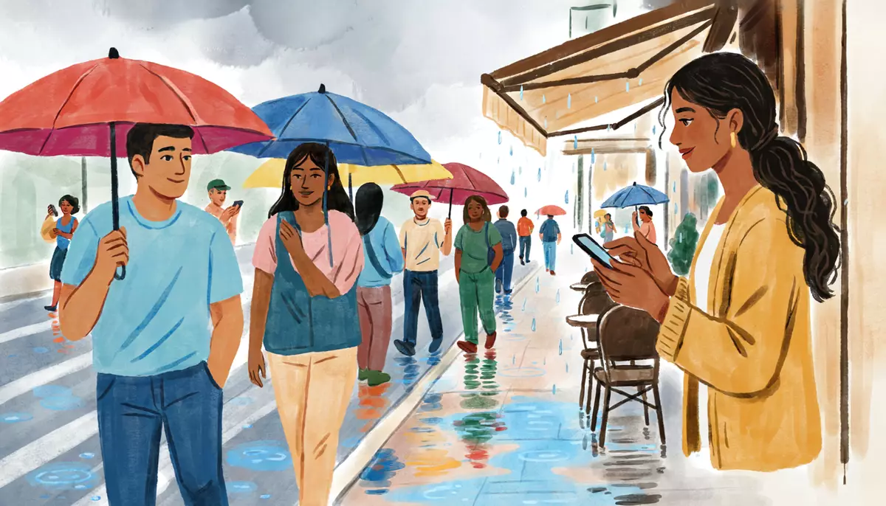

I can talk about the weather and write a short postcard or message.Goal of this lesson · CEFR Correspondence A1; Notes, messages and forms A1; Conversation A1
Paso 1 de 8
EscuchaListen
Listen to the conversation, then answer the questions.

Saturday 10 October, 5 p.m., in the rainy season. Mariana phones Alex. tú (friends on the phone)
First listen without the text. Press Escuchar todo and answer the first question. Then show the Spanish text and listen again.
ChooseWhat's the weather like where Mariana is?
Your answer:
M
Mariana¿Bueno? ¿Alex?Hello? Alex?
A
AlexHola, Mariana. ¿Dónde estás?Hi, Mariana. Where are you?
M
MarianaEn un café en la Condesa. ¡Está lloviendo muchísimo!In a café in Condesa. It's raining really hard!
A
Alex¿En serio? Aquí en la Narvarte está nublado, pero no llueve.Really? Here in Narvarte it's cloudy, but it's not raining.
M
MarianaEs la temporada de lluvias. En la mañana hace sol y en la tarde llueve.It's the rainy season. In the morning it's sunny and in the afternoon it rains.
A
Alex¿Llueve todos los días?Does it rain every day?
M
MarianaCasi todos los días, de junio a octubre. Pero en la noche hace fresco y es muy agradable.Almost every day, from June to October. But at night it's cool and really pleasant.
A
Alex¿Y en invierno?And in winter?
M
MarianaEn invierno no llueve. Hace frío en la mañana y en la noche, pero en la tarde hace sol.In winter it doesn't rain. It's cold in the morning and at night, but in the afternoon it's sunny.
A
AlexEn Chicago, en invierno hace muchísimo frío y nieva mucho. ¡Menos diez grados!In Chicago, in winter it's really cold and it snows a lot. Minus ten degrees!
M
Mariana¡Ay, no! Oye, ¿puedes venir por mí? No tengo paraguas.Oh, no! Hey, can you come and get me? I don't have an umbrella.
A
AlexSí, claro. Puedo estar ahí en media hora. Llevo dos paraguas.Yes, of course. I can be there in half an hour. I'll bring two umbrellas.
M
Mariana¡Gracias! Eres un sol.Thanks! You're a sweetheart.
1
ChooseListen again and answer.
When does it rain in Mexico City in the rainy season?
What is winter like in Mexico City?
What is Alex going to do?
Paso 2 de 8
FíjateNotice
Read how it works. Play the examples and repeat them aloud.
The weather: hace, llueve, está, hay
Ask ¿Qué tiempo hace? Spanish uses four patterns: hace + calor (hot), frío (cold), fresco (cool), sol (sunny), viento (windy), buen tiempo / mal tiempo; the verbs llueve (it rains) and nieva (it snows); está + nublado (cloudy) or está lloviendo (it's raining right now); and hay + a noun: hay tormenta (there's a storm). Temperatures are in degrees Celsius: estamos a veinte grados.
pattern
examples
hace + noun
Hace calor. Hace frío. Hace sol. Hace viento.
verb
Llueve mucho. Nieva en Chicago.
está + adjective
Está nublado. Está lloviendo.
hay + noun
Hay tormenta. Hay nubes.
From the conversation:
En un café en la Condesa. ¡Está lloviendo muchísimo!In a café in Condesa. It's raining really hard!
Es la temporada de lluvias. En la mañana hace sol y en la tarde llueve.It's the rainy season. In the morning it's sunny and in the afternoon it rains.
En Chicago, en invierno hace muchísimo frío y nieva mucho. ¡Menos diez grados!In Chicago, in winter it's really cold and it snows a lot. Minus ten degrees!
It's hace mucho calor (lit. "it makes much heat"), not es caliente. And for people: tengo calor, tengo frío (I'm hot, I'm cold).
The seasons
La primavera (spring), el verano (summer), el otoño (autumn, fall), el invierno (winter). Say en invierno, en verano. In much of Mexico people also talk about la temporada de lluvias (the rainy season) and la temporada de secas (the dry season).
From the conversation:
¿Y en invierno?And in winter?
la primavera, el verano, el otoño, el inviernospring, summer, autumn, winter
Poder: can
puedo · puedes · puede · podemos · pueden + infinitivo
Poder changes o → ue (except nosotros): the same ue pattern as jugar (u → ue). Add an infinitive: an Andamio structure. Use it for ability (puedo estar ahí en media hora), permission (¿puedo abrir la ventana?) and requests (¿puedes venir por mí?). No puedo = I can't.
From the conversation:
¡Ay, no! Oye, ¿puedes venir por mí? No tengo paraguas.Oh, no! Hey, can you come and get me? I don't have an umbrella.
Sí, claro. Puedo estar ahí en media hora. Llevo dos paraguas.Yes, of course. I can be there in half an hour. I'll bring two umbrellas.
Writing a postcard or message
Start with Querido (to a man) or Querida (to a woman) + name + a colon: Querida Mariana: With friends, ¡Hola, Diego! is fine. A typical first line: Te escribo desde Mérida (I'm writing to you from Mérida). Close with Un abrazo (a hug), Besos (kisses; friends and family) or Saludos (best wishes; more neutral), and your name.
Paso 3 de 8
PracticaPractice
Do the exercises in order. They get freer as you go.
1
ChooseChoose the right word.
En Mérida ___ mucho calor en mayo.
Hoy ___ nublado. ¿Va a llover?
En la tarde ___ tormenta.
¡Uf, ___ frío! ¿Me prestas tu suéter?
2
Listen and chooseListen to the weather forecast and answer.
When will it rain?
Show what they say
Narradora: Pronóstico para hoy en la Ciudad de México: en la mañana, sol y veinte grados. En la tarde, nubes y lluvias fuertes después de las cuatro.
What's the weather in Monterrey?
Show what they say
Narradora: En Monterrey hace mucho calor: treinta y ocho grados, sin nubes.
What should you take in Toluca?
Show what they say
Narradora: En Toluca hace frío en la mañana: tres grados. Lleve chamarra.
3
Type the missing wordsComplete with the right form of poder.
¿ venir por mí? (tú)
Can you come and get me?
Lo siento, hoy no . Tengo que trabajar. (yo)
Sorry, I can't today. I have to work.
Mariana estar ahí a las cinco.
Mariana can be there at five.
Si llueve, ir al museo. (nosotros)
If it rains, we can go to the museum.
4
Put the words in orderPut the words in order.
What's the weather like in Chicago?
In winter it's very cold.
Can you bring an umbrella?
5
Say it in SpanishNow you. Say it in Spanish (or type it).
Ask what the weather is like in Mexico City.
¿Qué tiempo hace en la Ciudad de México?
Say it's very hot today.
Hoy hace mucho calor.
Say it's raining right now.
Está lloviendo.
Say in your city it snows in winter.
En mi ciudad nieva en invierno.
Ask a friend if she can come at six.
¿Puedes venir a las seis?
6
Your own sentencesWeather where you are.
Write 3–4 sentences about the weather in your city: today, and in two seasons.
Show a model answer
Hoy en Chicago hace frío y está nublado: estamos a cinco grados. En invierno hace muchísimo frío y nieva. En verano hace calor, pero a veces llueve.
Check your answer:
Paso 4 de 8
PalabrasWords
Listen to each word and repeat it. Then do the quick check.
El tiempothe weather
¿Qué tiempo hace?What's the weather like?
hace calorit's hot
hace fríoit's cold
hace frescoit's cool
hace solit's sunny
hace vientoit's windy
llueve, la lluviait rains, rain
nieva, la nieveit snows, snow
está nubladoit's cloudy
la tormentastorm
los gradosdegrees
Las estacionesthe seasons
la primaveraspring
el veranosummer
el otoñoautumn, fall
el inviernowinter
la temporada de lluviasrainy season
Cosas y frasesthings and phrases
el paraguasumbrella
la chamarrajacket (Mexico)
¿Bueno?Hello? (on the phone, answering or calling; Mexico)
Diego is on a university trip to the Yucatán peninsula. He sends Alex a postcard.
Postcard
Querido Alex:
Te escribo desde Mérida. ¡Aquí hace muchísimo calor! Estamos a treinta y seis grados y no hay nubes. En la tarde a veces hay tormenta, pero después hace sol otra vezagain.
Todos los días vamos a una zona arqueológica diferente. Mañana vamos a Uxmal, y el sábado vamos a nadar en un cenotenatural sinkhole pool. ¡El agua es muy fresca!
¿Y en la ciudad? ¿Llueve mucho?
Un abrazo,
Diego
Words with a dotted underline have a translation: tap or hover.
1
ChooseAnswer the questions about the text.
What's the weather like in Mérida?
What is a cenote?
What does Diego ask Alex?
Paso 6 de 8
CulturaCulture
Read about the culture behind the language.
Rain at four, sun at noon
Mexico City sits at about 2,240 meters above sea level, so it is never very hot: most days are between about 10 and 25 °C all year. The year has two seasons rather than four: the rainy season (temporada de lluvias), roughly June to October, when mornings are sunny and heavy storms arrive in the afternoon; and the dry season (secas), from November to May, with cold mornings, sunny afternoons and, in spring, the warmest weather of the year.
Practical advice from locals: in the rainy season, carry an umbrella after lunch, and expect traffic when it pours. On the coasts and in the Yucatán peninsula (Cancún, Acapulco, Mérida) it is hot and humid most of the year, and the hurricane season runs to November: it starts in mid-May on the Pacific coast (Acapulco) and in June on the Atlantic side (Cancún, Mérida).
Elsewhere: In the Southern Hemisphere the seasons are the other way around: in Argentina, Chile and Uruguay, Christmas is in summer and July is winter. Near the equator (Bogotá, Quito) there is no summer or winter, just rainy and dry periods, like Mexico City.
Sources
INEGI and the Servicio Meteorológico Nacional (CONAGUA): climate of Mexico City and the rainy season.
NOAA / Servicio Meteorológico Nacional: Atlantic and Pacific hurricane seasons (Atlantic: 1 June–30 November; Eastern Pacific: from 15 May).
1
ChooseCheck: what did you learn?
In the rainy season in Mexico City, when does it usually rain?
Paso 7 de 8
Tu turnoYour turn
Now use it: do the role play, then write.
Role play: A rainy afternoon
A friend phones you from somewhere else in the city (or another city). Talk about the weather where each of you is, and decide what to do. Use tú.
You
Answer the phone (¿Bueno?).
Ask what the weather is like there.
Say what the weather is like where you are.
Compare with the weather in your country in two seasons.
Offer to do something (Puedo…) or ask your friend to do something (¿Puedes…?).
Mariana
Says it's raining a lot where she is.
Asks about the weather where you are.
Asks what winter is like in your country.
Asks if you can come and pick her up.
1. Listen to a model
One way the conversation could go. Listen, then try it yourself without looking.
A
Alex¿Bueno?Hello?
M
Mariana¡Hola, Alex! Aquí en el centro está lloviendo muchísimo. ¿Qué tiempo hace en tu colonia?Hi, Alex! Here downtown it's raining really hard. What's the weather like in your neighborhood?
A
AlexAquí está nublado, pero no llueve. Hace fresco.Here it's cloudy, but it's not raining. It's cool.
M
Mariana¿Y en Chicago? ¿Qué tiempo hace en invierno?And in Chicago? What's the weather like in winter?
A
AlexHace muchísimo frío y nieva. En verano hace calor.It's really cold and it snows. In summer it's hot.
M
Mariana¿Puedes venir por mí? No tengo paraguas.Can you come and get me? I don't have an umbrella.
A
AlexSí, claro. Puedo estar ahí a las seis.Yes, of course. I can be there at six.
2. Record yourself
Say your part aloud (pause the model after each of Mariana's lines), or answer the questions in the role card. Then play it back and compare.
3. Practice with an AI partner (optional)
Copy this prompt into ChatGPT or Claude, switch on voice mode, and have the conversation. It plays Mariana.
Stuck? Say «ayuda» and it gives you a hint in English, then carries on.
Finished? Say «terminamos» and it gives you feedback in English: what you did well, your mistakes, and useful phrases for next time.
Let's practice Spanish (Mexican Spanish, level A1). You are Mariana, 28, my friend in Mexico City. Use "tú".
It's Saturday 10 October, 5 p.m., in the rainy season. You are in a café in the Condesa neighborhood and it's raining hard; you don't have an umbrella. You want to know what the weather is like where I am, and what the seasons are like in my country.
Rules:
- Speak only Spanish, short turns (1-2 sentences), simple language for an A1 learner. Speak slowly and use very common words.
- Start the phone call, tell me about the rain, ask me about the weather where I am and in my country in summer and winter. Then ask me to come and get you with an umbrella. Use "hace…, llueve, está nublado" and "poder".
- You play only this one person. Never speak as anyone else, and don't describe what other people say or do.
- If I make a mistake, don't stop me: repeat what I said correctly in your answer (for example: if I say "Es frío en Chicago", you say "¿Hace frío en Chicago? ¡Ay, no!").
- At the end, the rain stops suddenly ("¡Ya no llueve! ¡Hace sol!"), and you change the plan: suggest meeting somewhere instead.
- When I say "ayuda", step out of the role play for a moment: in English, give me a short hint about what I could say next, with one or two short Spanish options, then continue the role play where we were.
- When I say "terminamos", stop the role play and give me feedback in English: 3 things I did well, up to 3 mistakes with corrections, and 3 useful phrases for next time.
Start now: say "¿Alex? ¡Hola! Aquí está lloviendo muchísimo."
Writing: A postcard
You're on a trip (real or imagined). Write a postcard to Diego like his: where you are, the weather, what you do every day, one plan for tomorrow, and a question. Use a correct opening and closing.
40–70 words.
Show a model answer
Querido Diego:
Te escribo desde Oaxaca. Aquí hace sol en la mañana y en la tarde llueve un poco. Hace fresco en la noche. Todos los días como en el mercado y camino por el centro. Mañana voy a ir a Monte Albán. ¿Qué tiempo hace en la ciudad?
Un abrazo,
Alex
Check your text:
Paso 8 de 8
¿Lo logré?Did I do it?
Check yourself against the goal of the lesson.
Read each statement and be honest: anything marked casi or todavía no goes into Repaso so it comes back soon.
I can ask and say what the weather is like.
I can talk about the seasons in my country and in Mexico.
I can ask someone if they can do something, and say what I can do.
I can write a short postcard with the right opening and closing.